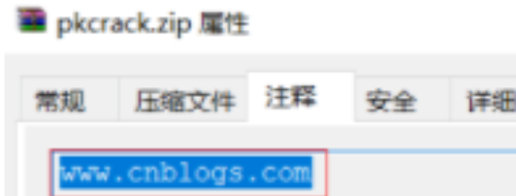
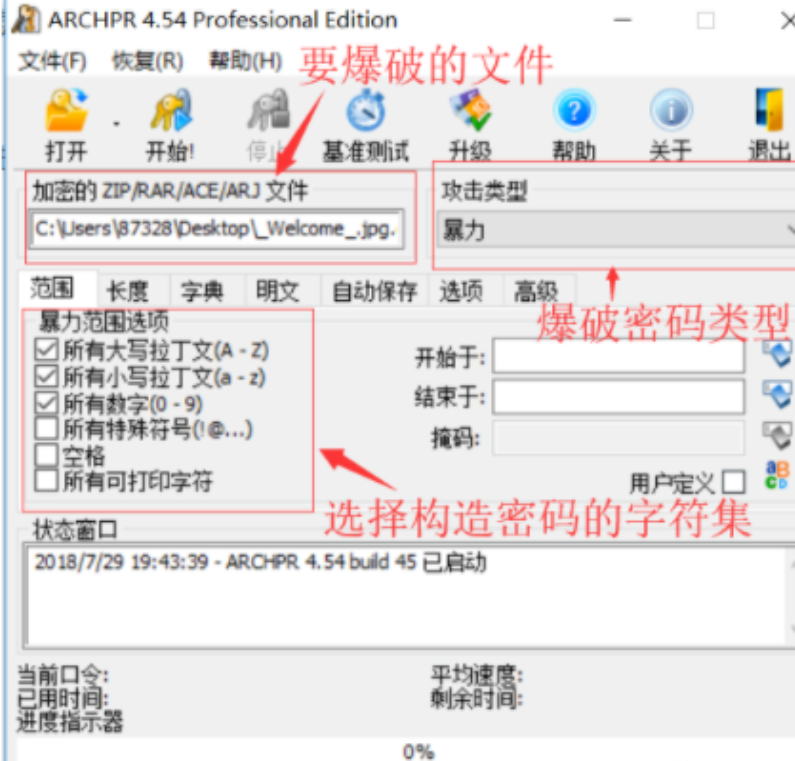
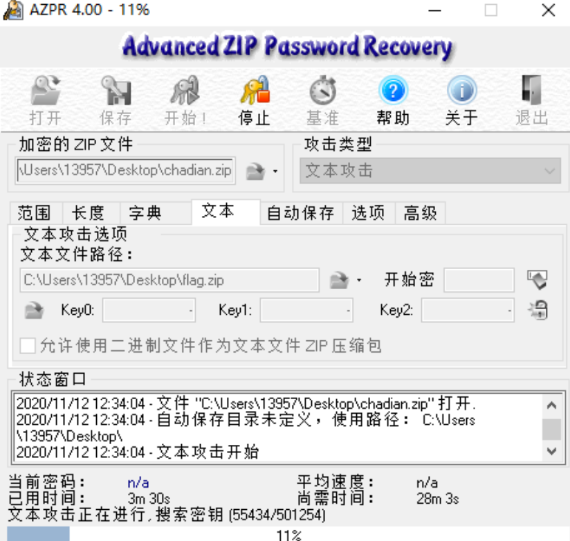
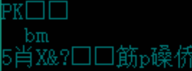
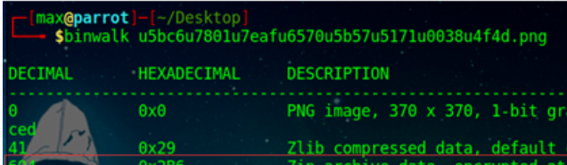

文件上传
属性隐藏
就是在属性的注释里有密码

看二进制
在winhex里搜索字符pass 、 key 等，查看是否有含有压缩包密码
ZIP伪加密
ZIP文件组成
- 压缩源文件数据区
- 压缩源文件目录区
- 压缩源文件目录结束标志。
zip伪加密
- 在文件头的加密标志位做修改
- 打开文件时识被别为加密压缩包
具体如下：
- 压缩源文件数据区
50 4B 03 04 是头文件的标志 （0x04034b50）
00 00 全局方式标记（判断有无加密的重要标志） - 压缩文件目录区
50 4B 01 02 目录中文件头标志（0x02014b50）
00 00 全局方式标记（有无加密的重要标志，更改这里就可以进行伪加密了，改为 09 00 打开就会提示有密码了） - 压缩源文件目录结束标志
50 4B 05 06 目录结束标记
辨别真假加密
- 无加密
压缩源文件数据区的全局加密应当为 00 00
且压缩源文件目录区的全局方式标记应当为00 00 - 假加密
压缩源文件数据区的全局加密应当为 00 00
且压缩文件目录区的全局方式标记应当为 09 00 - 真加密
压缩源文件数据区的全局加密应当为 09 00
且压缩源文件目录区的全局方式应当为 09 00
破解方法
- winrar修复功能
- winhex打开修改标志位
暴力遍历
Windows ARCHPR

明文攻击
已知zip中的一个文件（文件大小要大于12Byte）或者已经通过其他手段知道zip加密文件中的某些内容时
因为同一个zip压缩包里的所有文件都是使用同一个加密密钥来加密的，所以可以用已知文件来找加密密钥
用ARCHPR或者AZPR进行明文攻击

过程
- flag.txt是加密压缩包里的flag.txt的明文，一般是对比CRC是否一样
- 将flag.txt压缩成.zip文件
- 在软件中填入相应的路径即可开始进行明文攻击
例题
攻防世界 Misc高手进阶区 3分题 miscmisc
CRC32碰撞
CRC“冗余校验码”，CRC32则表示会产生一个32bit（8位十六进制数）的校验值
在产生CRC32时，源数据块的每一位都参与了运算，因此即使数据块中只有一位发生改变也会得到不同的CRC32值，利用这个原理如果文件字节长度比较短的话，可以尝试CRC32爆破
碰撞脚本
1 | #coding=utf=8 |
- 在 Python 2.x 的版本中，binascii.crc32 所计算出來的 CRC 值域为[-2^31, 2^31-1] 之间的有符号整数，为了要与一般CRC 结果作比对，需要将其转为无符号整数，所以加上& 0xffffffff来进行转换
- 在 Python 3.x 的版本中，其计算结果为 [0, 2^32-1] 间的无符号整数，因此不需额外加上& 0xffffffff
进制转换隐藏信息
当发现开头是PK的时候，说明是ZIP文件，进行进制转换，再用winhex保存为zip

图片中隐藏压缩包
以jpg格式的图片为例
- 一个完整的 JPG 文件由 FF D8 开头，FF D9结尾
- 图片浏览器会忽略 FF D9 以后的内容
- 因此可以在 JPG 文件中加入其他文件
用kali的binwalk指令

本博客所有文章除特别声明外，均采用 CC BY-NC-SA 4.0 许可协议。转载请注明来自 senu11！